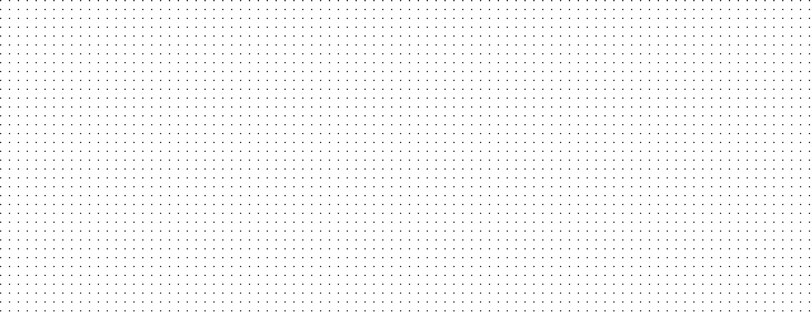
Rely on your AI with Distributional, the only adaptive testing platform built for enterprise AI applications
AI apps are more than just inputs and outputs. Testing should cover every attribute of every part of the app.
Without an effective way to see and understand changes in behavior, you’re stuck scrambling through siloed data and components to fix issues.
Most evals give you a snapshot of performance in time. Testing should adapt with your app based on real-world usage, ensuring you always are getting the behavior you want.
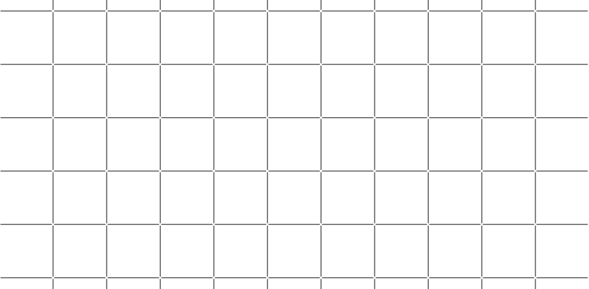
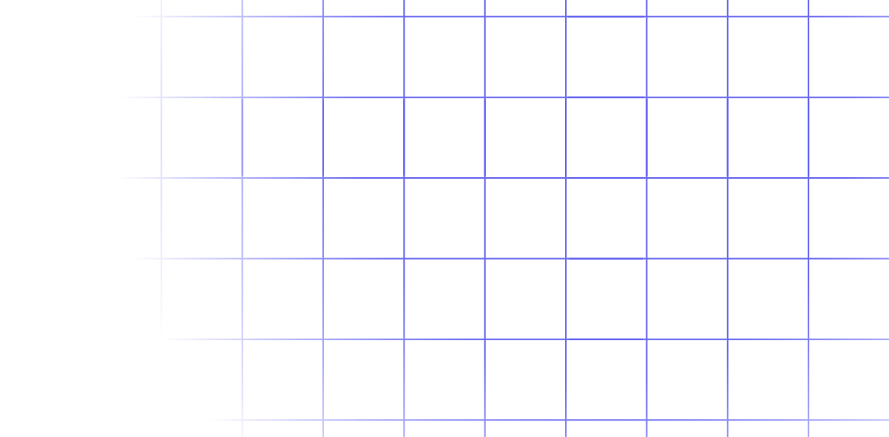
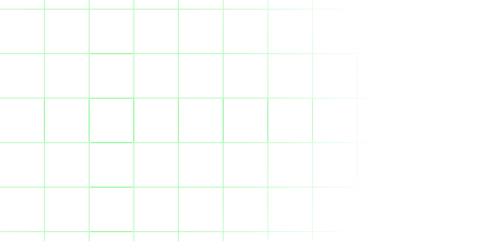
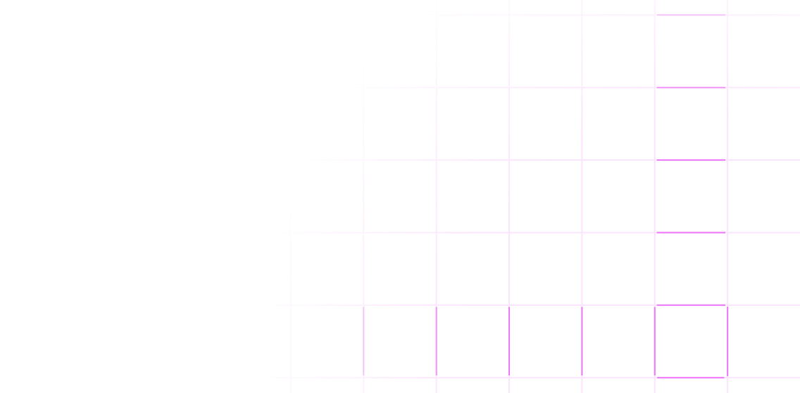
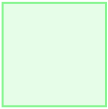
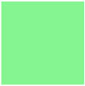
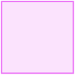
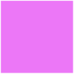
Apply comprehensive testing that covers every attribute of every part of your app to provide a complete definition of behavior.
Detect behavior shifts and gain clear insights into what’s driving changes, down to specific result sets.
Adapt your tests continuously to keep pace with new developments and push updates with predictability and control.
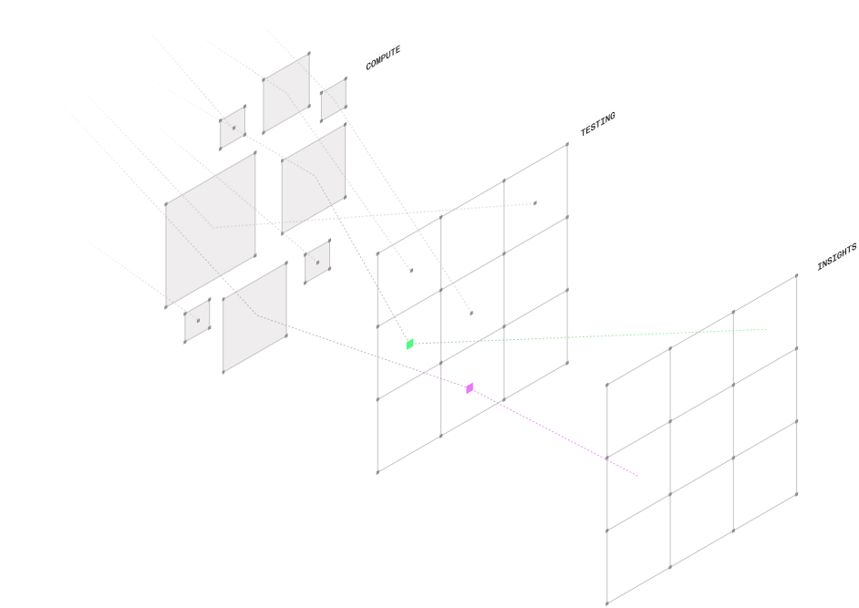
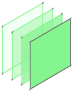
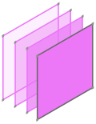
Automatically generate a behavioral fingerprint from your app’s runtime logs and existing metrics, and create tests to track behavior changes over time.
Distributional alerts you to behavior changes and gives you insights into what exactly is changing. Pinpoint causes at any level of depth to quickly take action.
Use production usage insights to evolve your AI app. Automatically calibrate tests to minimize false positives. Add tests with a single click to avoid false negatives. And upgrade to a new version or architecture without fear it will break your build.
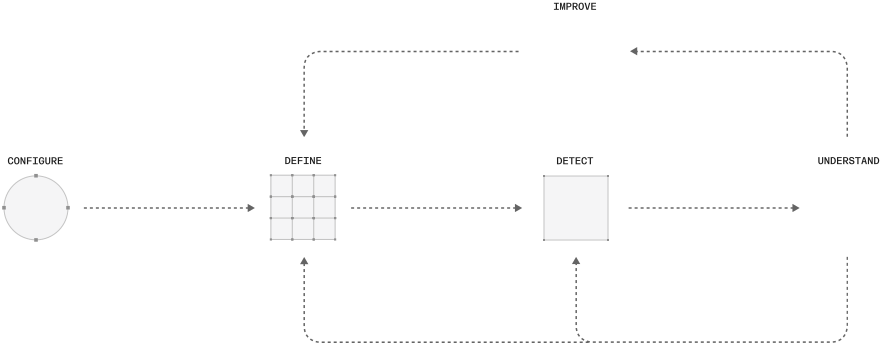
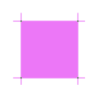
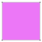
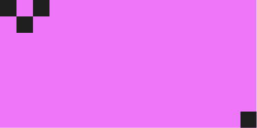
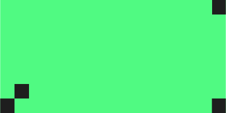
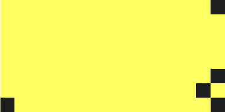
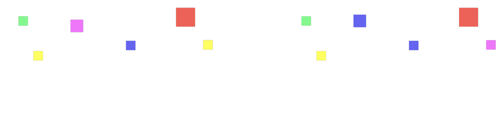
Join the leading enterprises transforming their AI apps with Distributional’s adaptive testing platform.
AIWeb design, Development